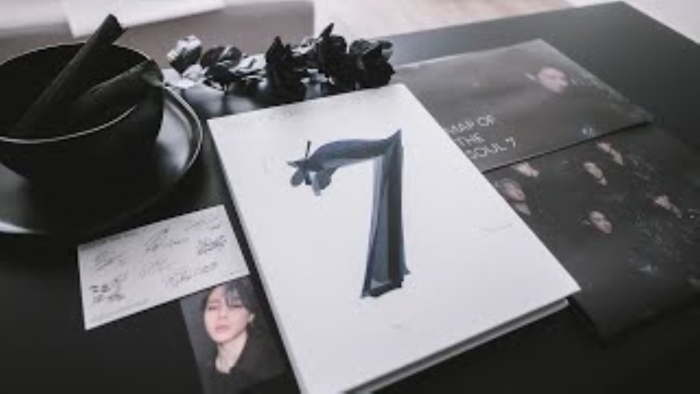

<doctype html>
<html>
    <head>
        <style>
            /* to make the picture centre */
            .center {
                display: block;
                margin-left: auto;
                margin-right: auto;
            }                     
            /* to change the background color */
            body {
  background-color: rgba(79, 62, 138, 0.685);
}
        /* internal css is applied */
        h1 {
            color: rgba(13, 0, 128, 0.726);
            margin-left: 40px;
          }
          </style>
    </head>
    <body>
        <h1>color</h1>

        
        <map name=tannies>
        <area shape="rect" coords="319,146,892,349" alt="window" href="https://www.amazon.in/World-Bazaar-BTS-Official-Album/dp/B0BS1QDQX7?source=ps-sl-shoppingads-lpcontext&ref_=fplfs&smid=AYVV4V3PAVXVB&th=1" target="_blank" />
        <area shape="poly" coords="7,171,131,159,218,116,237,82,205,60,169,60,72,53,6,70" alt="window" href="https://www.amazon.in/DREAMUS-Official-Lightstick-Transparant-Photocard/dp/B09ZNTK1N4/ref=pd_lpo_sccl_2/261-7452770-6838734?pd_rd_w=iyiKD&content-id=amzn1.sym.c3daf87c-2802-47b7-8fa4-23dc91a4fca7&pf_rd_p=c3daf87c-2802-47b7-8fa4-23dc91a4fca7&pf_rd_r=Q1YGX7S0CGCZVJRX8847&pd_rd_wg=r87vD&pd_rd_r=edb9cf7b-64d0-46c6-8dce-67ba21854f57&pd_rd_i=B09ZNTK1N4&psc=1" target="_blank" />      
    </map>
    </body>
</html>